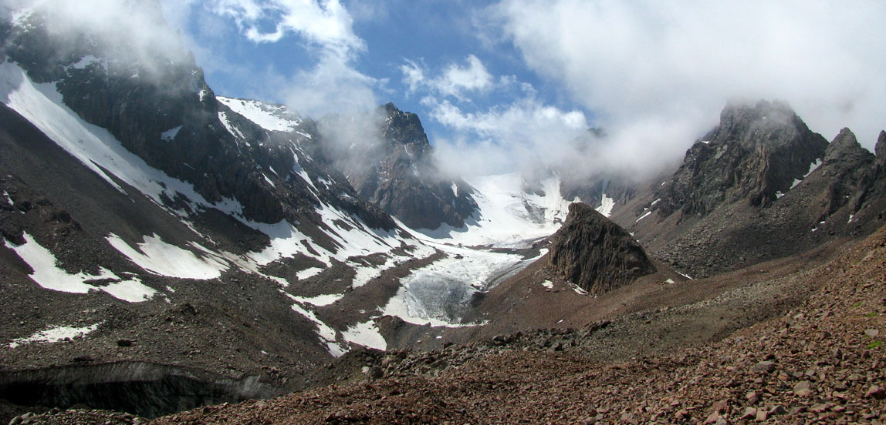
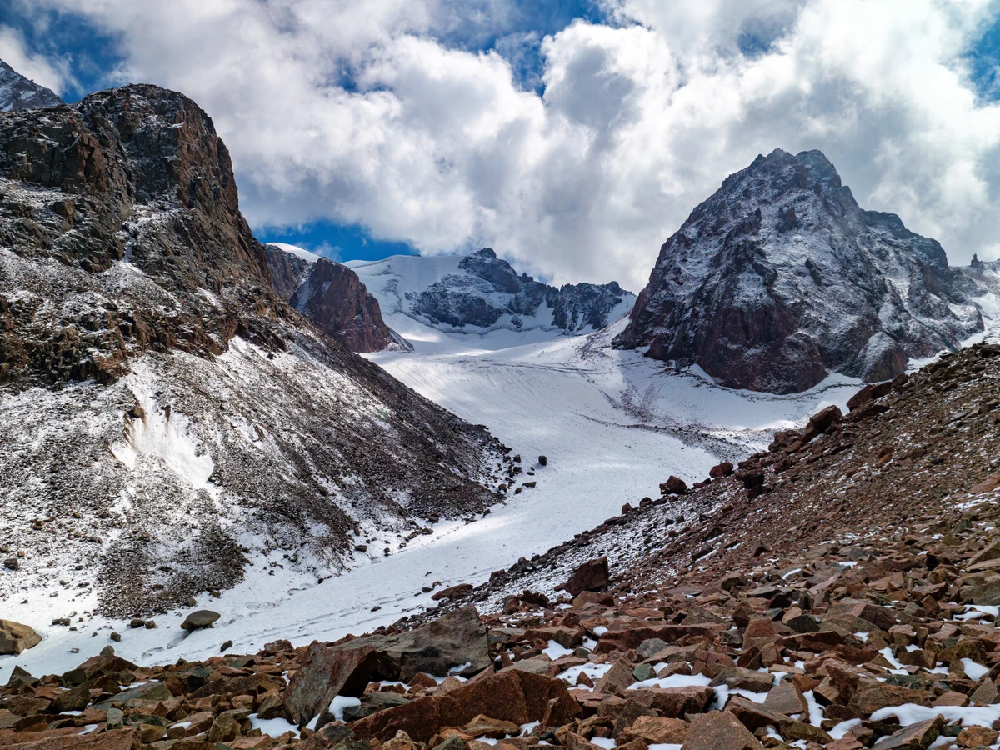
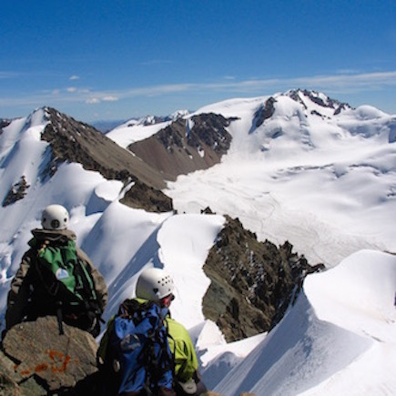
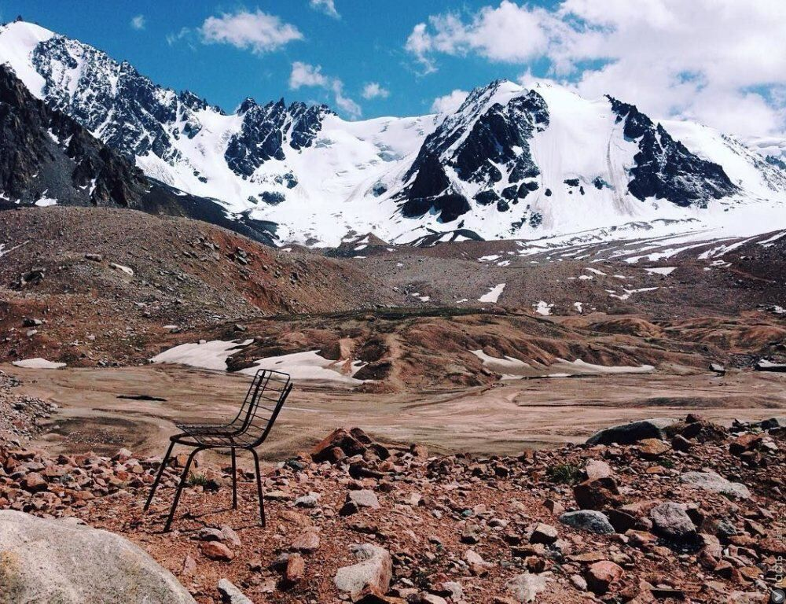
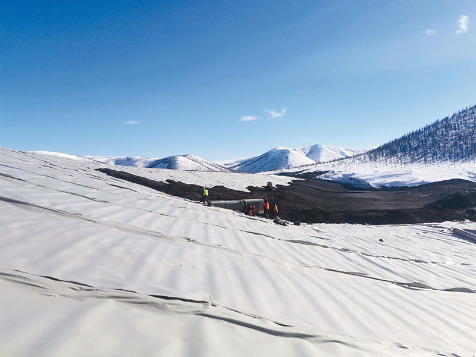
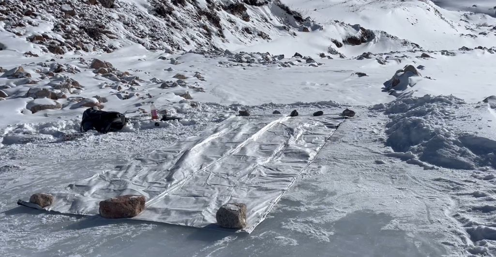

Проект республиканского уровня, объединяющий науку, экологию и технологии для замедления таяния ледников Заилийского Алатау и защиты водных ресурсов региона.

GLACIER SHIELD KZ — это научно-исследовательский и стартап-проект, направленный на комплексное изучение деградации ледников Алматы и разработку практических решений по их защите. Ледники являются основным источником пресной воды для города и играют ключевую роль в климатической устойчивости региона.
Проект объединяет анализ статистических данных, международный опыт, инженерные решения и цифровые технологии мониторинга.
За последние 70 лет площадь ледников Заилийского Алатау сократилась более чем на 40%, что ведет к деградации горных экосистем.
До 40% летнего стока рек формируется за счет ледникового питания, исчезновение которого угрожает водоснабжению Алматы.
Интенсивное таяние повышает вероятность прорыва моренных озер и селевых потоков.



Разработка и внедрение инновационной системы защиты ледников и цифрового мониторинга их состояния.
| Год | Количество ледников | Площадь (км²) |
|---|---|---|
| 1955 | 381 | 287 |
| 1980 | 340 | 230 |
| 2000 | 310 | 200 |
| 2020 | 270 | 170 |
Согласно расчетам ученых и экстраполяции текущих темпов таяния, к 2050 году площадь ледников может сократиться еще на 30–40%, что приведет к критическому дефициту водных ресурсов.
Экологичная теплоотражающая геоткань для сезонного укрытия ледников.
Спутниковый мониторинг, датчики температуры, аналитика данных и ИИ.
Горные регионы Казахстана и Центральной Азии.

Геотекстиль — экологичная теплоотражающая ткань, предназначенная для покрытия ледников в летний период. Снижает солнечное нагревание и замедляет таяние льда.
Материал отражает до 80% солнечного излучения, удерживает холодный слой воздуха на поверхности льда и предотвращает интенсивное таяние.

Климатические изменения ускоряют таяние, и без вмешательства ледники исчезнут значительно быстрее.
Геоткань экологична и не нарушает природные процессы.